1概览与目标
欢迎光临，欢迎光临西洛星系（Silo System）——我们银河系的跳动心脏，十年一度的竞速盛典就在此举办！我们召集了宇宙中技艺最精湛的游客——饱经旅途磨砺的探险家，他们将在这场终极较量中一较高下。
这些飞行员必须竞相游览西洛星系中的所有行星……沿着轨道路径冲浪、在超跳跃传送门之间瞬移、穿越超空间（hyperspace）。在我们奢华的行星或奢靡的太空站上享受梦幻假期，同时见证这场终极星际马拉松。全银河系的目光都将聚焦这场十年盛会——庆祝我们在西洛霸权（Silo Supremacy）下实现系统统一。比赛开始！
ORBIT（星际游客轨道竞速）是一款 24 世纪的战术太空竞速游戏，回合简单却充满策略可能。玩家竞相游览星系中的所有行星，然后率先返回自己的起始行星。在你的回合，你将打出一张卡牌、按任意顺序激活其效果，然后将手牌补满至手牌上限。
卡牌能让你做一系列组合操作，包括驾驶飞船、收集能量以获得额外飞行、沿轨道推进行星，甚至反转行星的轨道方向！规划路线以利用轨道洋流、在行星间弹跳，是制胜关键。游览特定太空站与行星可提升你的手牌上限与能量上限。当你的飞船停泊在行星上时，行星会带着你沿轨道前进，助你更快横越棋盘！
但你那些不择手段的对手无疑会试图破坏你的计划、阻挠你的进度，甚至利用你停泊的行星把你带离其他目的地。要找到最快路线，需要巧妙思考与长远规划并重。唯有一人能成为西洛星系最伟大的游客！
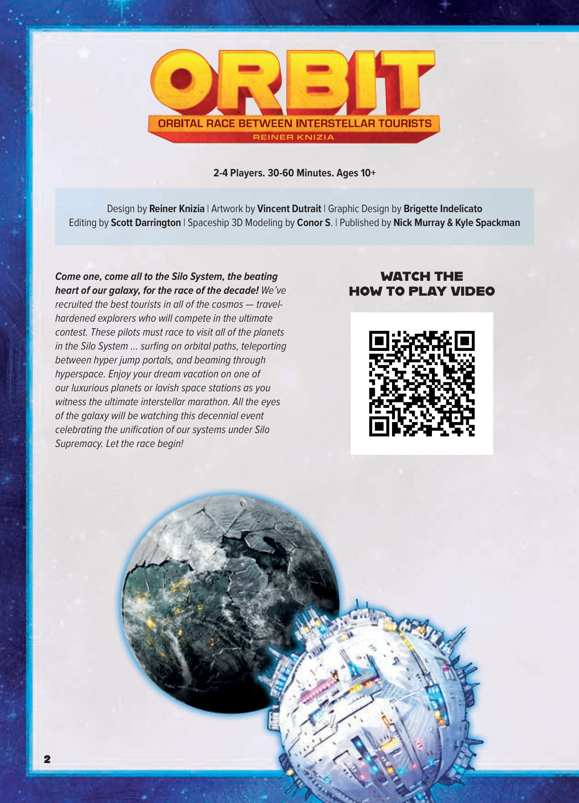
2组件
正面（标准）与背面（异度空间）。
每条彩色轨道各一个。
放在棋盘指定位置。
每种玩家颜色各一艘。
记录任务、手牌、能量。
七色 × 四名玩家。
用于额外飞行步数。
每张含若干效果，按任意顺序触发。
友谊标记与交换标记。
PRISM 变体中的第九颗"行星"。
白色，PRISM 变体每玩家一个。
用于随机抽出太空站。
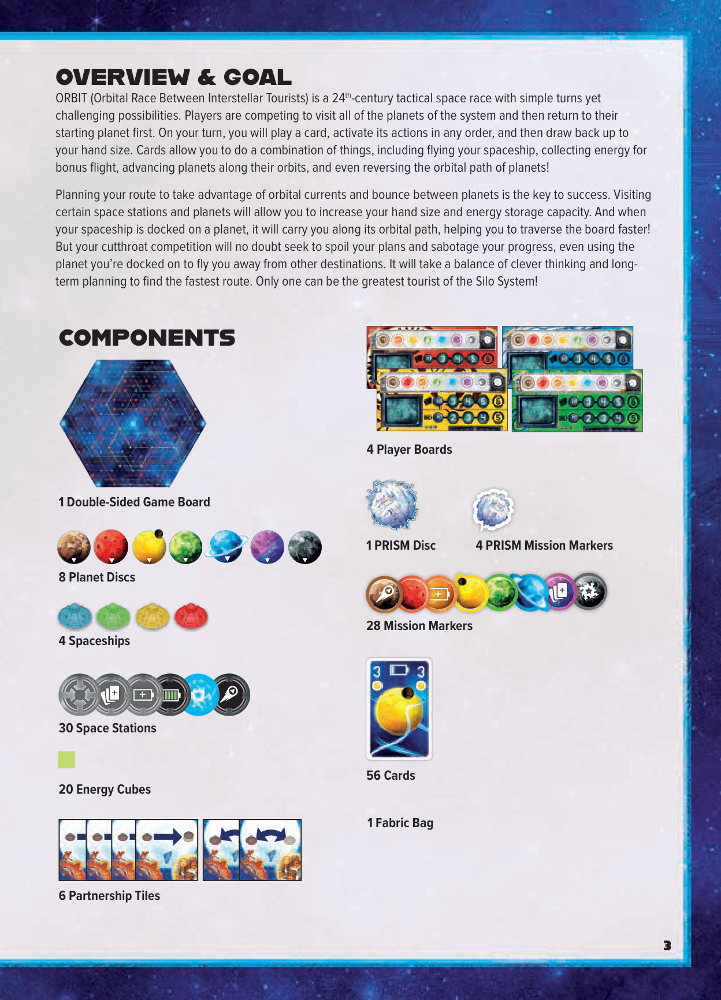
3准备
- 决定使用棋盘哪一面，平铺于游戏区中央。初次游戏请使用棋盘正面。
- 棋盘显示八条不同颜色的轨道，轨道上的行星符号标出各行星沿轨道推进时的位置。将八个行星随机放在对应颜色的轨道上的行星符号处，每个箭头随机指向轨道线可能的方向之一。尽量将行星较均匀地散布在棋盘上。
- 将 30 个太空站混入布袋，随机抽出并正面朝上放在棋盘上指定的太空站位置各一个。
- 将所有能量方块放在棋盘旁。
- 最近当过游客的玩家为起始玩家（或随机指定）。然后以逆序行动顺序（从起始玩家右手边的玩家开始，逆时针进行），每位玩家选择一种颜色，取对应玩家面板，将同色飞船放在对应行星上，并在面板顶行放上其余各色的任务标记。PRISM 任务标记（白色）的位置留空；它随 PRISM 变体登场（见第 11 页）。
- 最后，洗匀所有卡牌，给每位玩家发 3 张起手牌（hand），剩余卡牌作为牌库正面朝下放在棋盘旁。
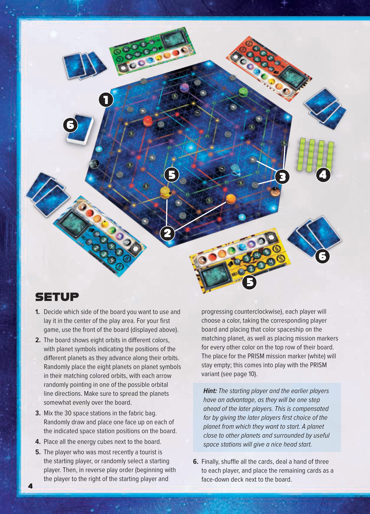
4你的玩家面板
玩家面板帮助你在游戏中追踪进度。
七种颜色对应你需要游览的七颗行星（不含起始行星）。每次游览一颗行星，移除对应的任务标记——稍后详述……
你手牌中的卡牌数，始终是该行可见的最小数字。获得升级时，用相应的任务标记或太空站盖住可见最小数字。每次升级手牌上限 +1 张。
存放能量方块的空间。第三行标出你最多能持有的能量方块数——始终是可见的最小数字。获得升级时盖住最小数字，能量上限每次 +1 个。
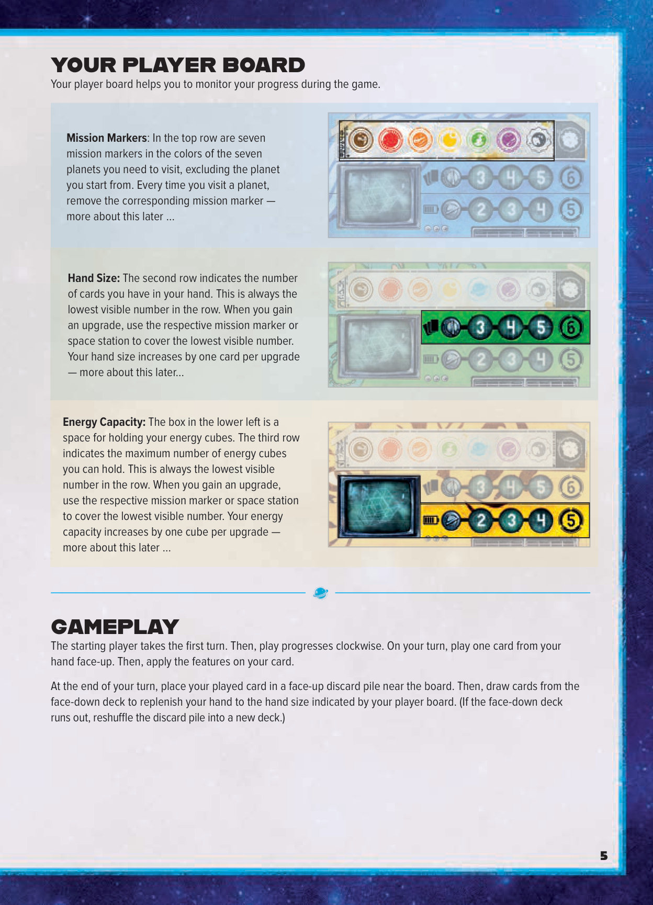
5如何游玩
起始玩家先手，之后顺时针进行。在你的回合，打出一张手牌正面朝上，然后执行卡牌上的效果。
回合结束，将打出的卡牌放入棋盘旁的弃牌堆（正面朝上）。然后从牌库抽牌，将手牌补满至玩家面板所示的手牌上限。（若牌库抽空，将弃牌堆重新洗成新的牌库。）
6卡牌效果
推进行星 必选
卡牌上每个行星符号，必须将对应颜色的行星沿其轨道线、朝箭头方向推进到轨道中下一个位置（行星符号）。部分效果可选，但此效果必须执行。
- 若飞船停泊在行星上，随行星一起推进。若推进终点有飞船，则停泊在该行星上（飞船叠在行星上方）。
- 若打出将行星推进两个位置的卡牌、且第一位置有飞船，这些飞船不会停泊行星——它们被越过，仍留在棋盘上！
- 打出推进所有行星的卡牌时，建议按卡牌所示顺序处理行星。
- 推进后务必让箭头指向行星下一步将前往的位置。这在第二面棋盘尤为重要，那里可能有两条可选方向。若有选择，始终由行动玩家决定行星后续走向。
万能行星符号
部分卡牌显示万能行星符号，可推进任选一颗行星。
获取能量方块
取指示数量的能量方块放在玩家面板第三行开头的能量区。能量上限：持有数量不得超过能量上限所示。游戏开始时上限为 2 个，直到升级能量上限。
获取最大数量能量方块
取能量方块，将能量区的方块数提升至当前能量上限。
驾驶飞船
行星沿轨道从符号到符号推进，飞船则从一个线路交叉点以小步飞到另一个。可飞行至多指示的步数。可选择不执行此效果。
多个飞船可位于同一交叉点——直接叠放。含行星或太空站的交叉点同理。飞船飞行时分开，不会像行星载飞船那样互相搭载。
- 行星：飞行终点在从未游览的行星上时，立即从面板移除对应任务标记。该标记可能附带效果。
- 太空站：飞行终点在太空站时，可激活该站。
反转行星箭头
任选一颗行星，将其箭头从当前轨道位置指向任一可能的轨道线方向。可选择不执行此效果。
星云 扩展
部分卡牌显示星云。这些随人造星云模块（见第 16 页，含于星云扩展）登场。常规游戏可忽略。
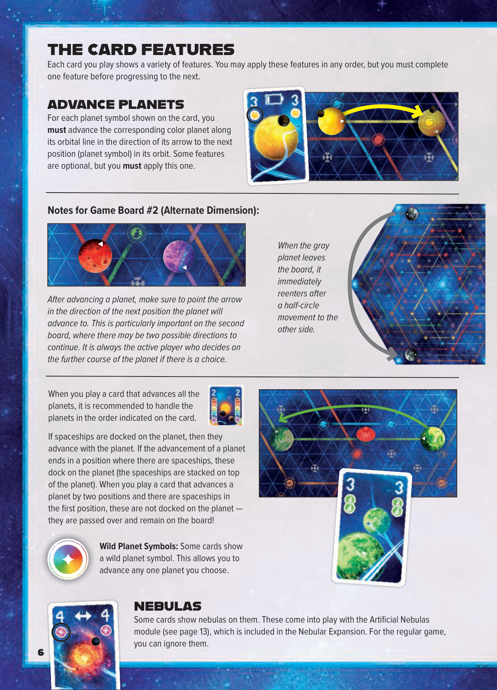
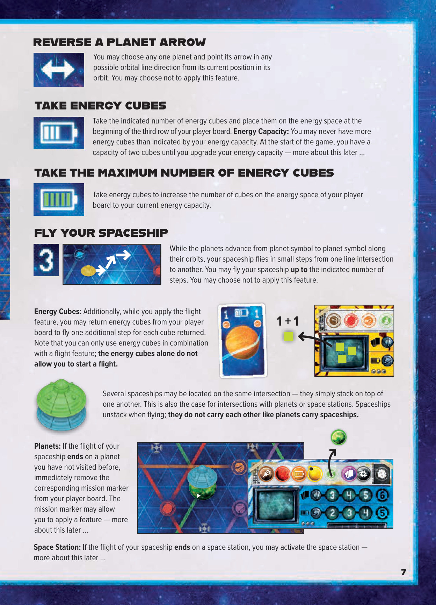
7任务标记
若飞行终点在从未游览的行星，或移动后停泊于一颗新行星，必须立即从面板移除对应颜色的任务标记。若标记带效果，立即执行：
用此标记盖住第二行可见最小数字，手牌上限 +1 张。
将飞船放在任一显示超跳跃符号的交叉点（含太空站）。可选择不执行此效果。
用此标记盖住第三行可见最小数字，能量上限 +1 个。
将飞船直线飞到当前位置可达的任一交叉点。可选择不执行。若超加速落到另一行星或太空站，可立即执行其效果（若有）。
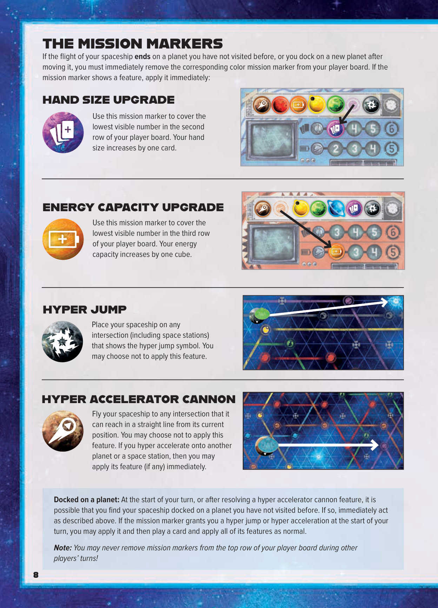
8棋盘要素
太空站
飞行终点在太空站时，可激活该站。分两类：
首位飞行终点落在其交叉点的玩家将其收集。两种：
- 能量上限升级：用太空站盖住第三行可见最小数字，能量上限 +1 个。
- 手牌上限升级：用太空站盖住第二行可见最小数字，手牌上限 +1 张。
整局留在棋盘上。飞行终点落在其交叉点时立即执行效果：
- 超跳跃传送门（同棋盘传送门）：将飞船放在任一其他显示超跳跃传送门的交叉点（含其他太空站）。
- 超加速炮（同棋盘炮）：直线飞到可达的任一交叉点；若落到行星或太空站可立即执行其效果。
- 燃料库：取能量方块，将能量区方块数提升至当前能量上限。
超跳跃传送门
飞行终点在超跳跃传送门时，可将飞船放在任一其他显示超跳跃传送门的交叉点。
最大升级
PRISM 圆盘
这枚"太空站"代表第九颗行星，随 PRISM 变体登场（见第 11 页）。
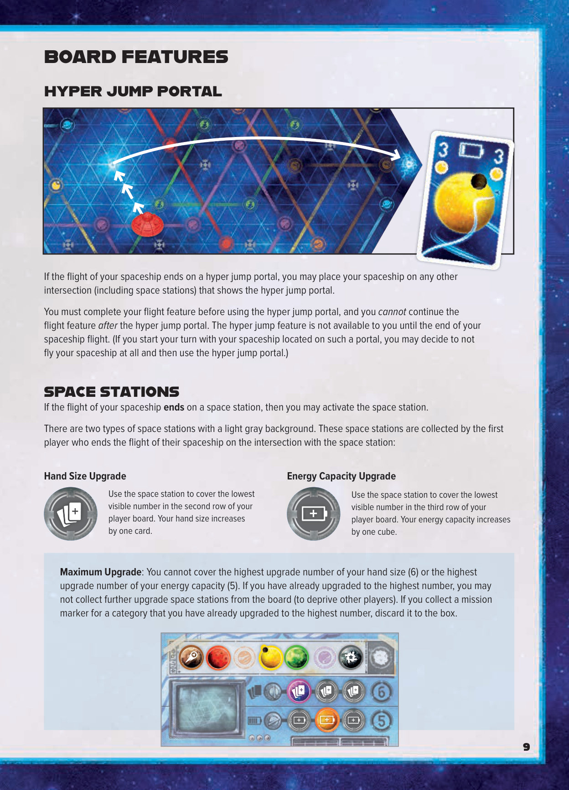
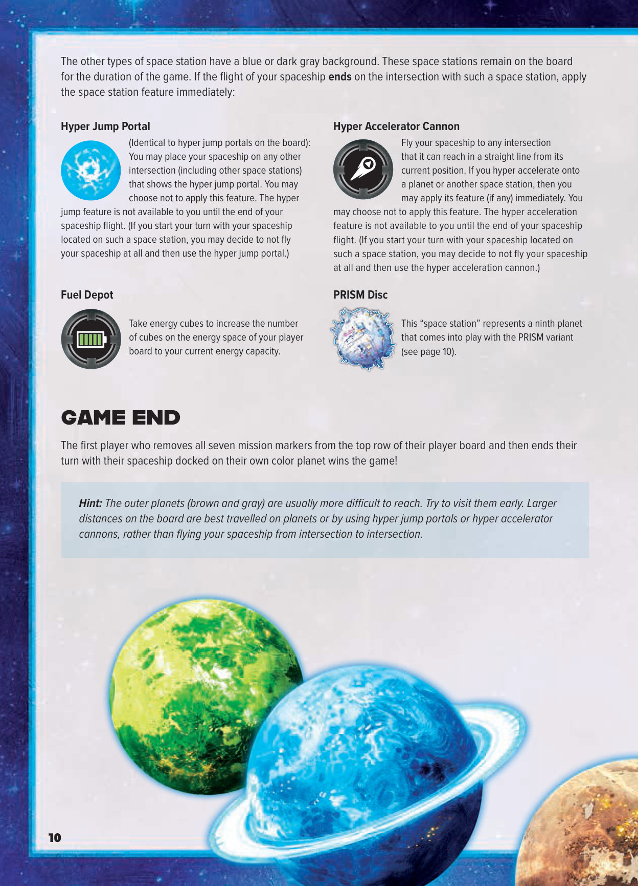
9胜利条件
首位从面板顶行移除全部七个任务标记、且回合结束时飞船停泊在自己颜色行星上的玩家获胜！
10变体
PRISM 变体 更难
PRISM：星系间静止巨型都市首创革命（PRIME REVOLUTIONARY INTERGALACTIC STATIONARY MEGALOPOLIS）。可与任一面棋盘及其他变体同用，任意人数都更难，尤其推荐两人。
- 准备：放置太空站后，随机用一个 PRISM 圆盘替换一个太空站，被替换的太空站收回盒中。准备面板时，将一个 PRISM 任务标记加到面板顶行的对应位置。
- 游玩：PRISM 圆盘作为额外、静止的"行星"，获胜前必须游览。
四人合伙变体
四人对局可正常竞速，也可采用此合伙变体。规则同前，但有以下改动：
- 合伙：相对而坐的两人组成一队合伙。当两人均从各自面板移除全部任务标记且两艘飞船均位于各自母星时，该合伙获胜。
- 沟通：未与合伙者商议前，玩家须先打出一张手牌正面朝上开启回合。之后两合伙者可自由沟通、商议行动玩家的操作。不可向合伙者展示手牌。无论沟通如何，行动玩家最终决定并采取行动。
- 能量方块：自己回合也可使用合伙者玩家面板上的能量方块。注意：仍只为自己的面板获得方块，你的面板决定个人燃料上限。
每人一个，可在自己某回合将飞船飞到合伙者飞船的位置。可在回合任意时刻使用（飞行前后皆可，但不可在飞行与解决任务标记/太空站效果之间进行）。仅用一次后弃置。
每对合伙一个，可交换两艘飞船的位置。可在任一玩家回合任意时刻使用（飞行前后皆可，同样不可在飞行与解决效果之间）。仅用一次后弃置。
进阶双人：双飞船变体 老手
两名经验丰富的玩家可尝试这个更具挑战的变体。
- 准备改动——第 5 步：从玩家二开始，两人轮流一次选一种颜色（各选两色）。取对应颜色的玩家面板，飞船放在对应行星上，两块面板都放满任务标记。然后每人将一块面板叠在另一块之上，仅露出底下面板的顶行（任务标记）。
- 每人各得一个友谊标记与一个交换标记。
- 游玩改动：仍每回合只打一张牌、飞一艘飞船，但可决定飞哪艘。从任一面板的手牌/能量上限升级（或太空站）始终升级上方面板——因此升级更快更易。
- 类似四人合伙变体，可在回合任意时刻用友谊或交换标记（飞行前后皆可，不可在飞行与解决任务标记/太空站效果之间）。友谊标记甚至可用于飞本回合未借卡牌飞行的那艘飞船。
- 胜利：首位从两块面板均移除全部任务标记、且回合结束两艘飞船均停泊在对应行星的玩家获胜！
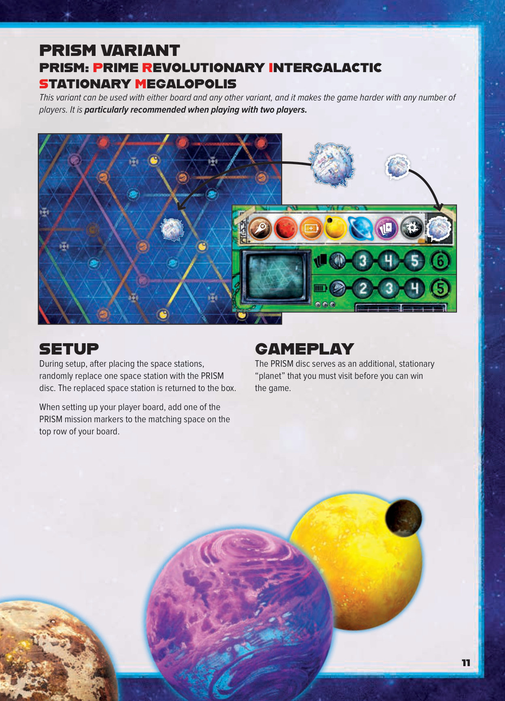
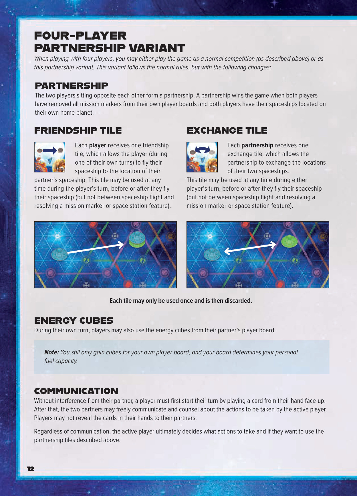
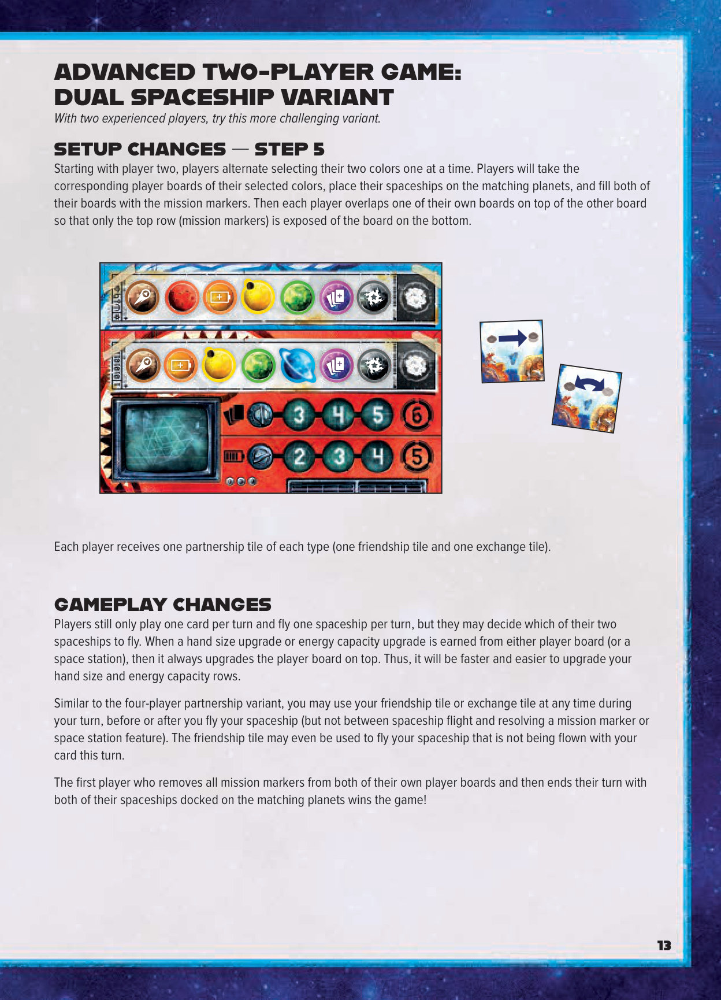
11星云扩展
以下模块可单独或任意组合加入游戏。购于 www.BitewingGames.com。
导航标记模块
可与任一面棋盘及其他变体同用。通过简化导航缩短游戏时长。
- 准备：每位玩家将三枚同色导航标记放在面板旁。（双飞船变体每玩家只取一种颜色的导航标记。）
- 游玩：整局中，仅在你自己回合，可各执行一枚标记的效果一次，然后弃置。每回合可用多枚。
取能量方块将能量区方块数提升至当前能量上限。
将飞船放在任一显示超跳跃传送门的交叉点（含太空站）。
将手牌全部弃入弃牌堆，再从牌库抽新牌。
12 枚导航标记（4 色）、4 个超加速引擎、18 个星云片。
超加速引擎模块
可与任一面棋盘及其他变体同用。大幅改变游戏手感与策略可能。
- 准备：将超加速引擎放在可取处。
- 游玩：在你将能量上限升级至最高（5）的那回合结束时，必须用超加速引擎升级飞船。升级永久。移除第三行所有能量方块、任务标记与太空站，放一个超加速引擎盖住所有数字。
- 此后不能再获取或使用能量方块。改为：当打出的卡牌允许你获取能量方块时，本回合可改用一次超加速引擎。视作卡牌效果（与其他效果任意顺序）。其他允许获取方块或升级能量上限的效果（如激活的太空站或任务标记）无效、也不触发引擎。可选择不执行此效果。
人造星云模块
可与任一面棋盘及其他变体同用。对棋盘引入永久改变（人造星云），阻挡飞船通行并加快行星轨道速度。
- 准备：将星云片放在可取处。
- 游玩：显示人造星云的卡牌效果登场。打出此类卡牌时，可将一枚人造星云片放在任一颗行星轨道的任一行星符号上，前提是该符号上无行星、无飞船（也无其他星云片）。该符号交叉点即被人造星云永久占据。
- 若行星推进至被人造星云占据的位置，立即沿轨道继续推进到下一个无人造星云的位置。
- 飞船不可飞入或飞越被人造星云占据的行星符号交叉点。超加速炮或超加速引擎同理。
- 若星云片用尽，不可再放置人造星云。
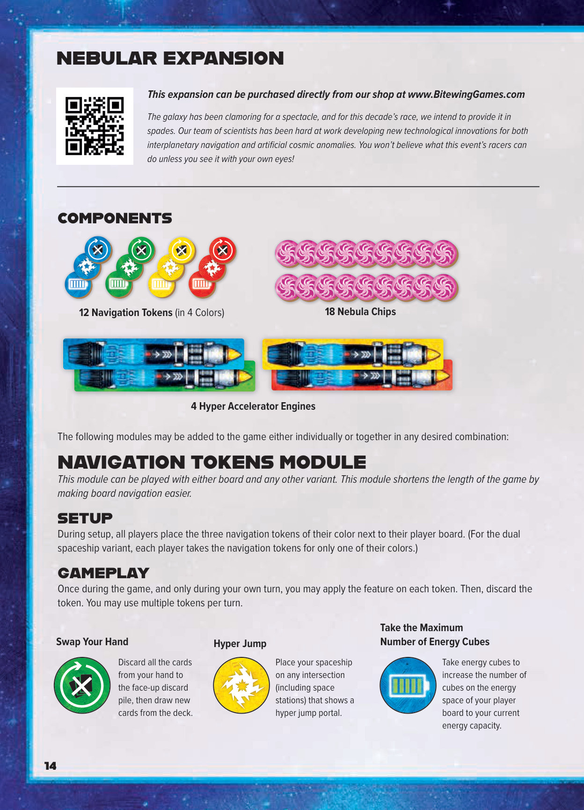
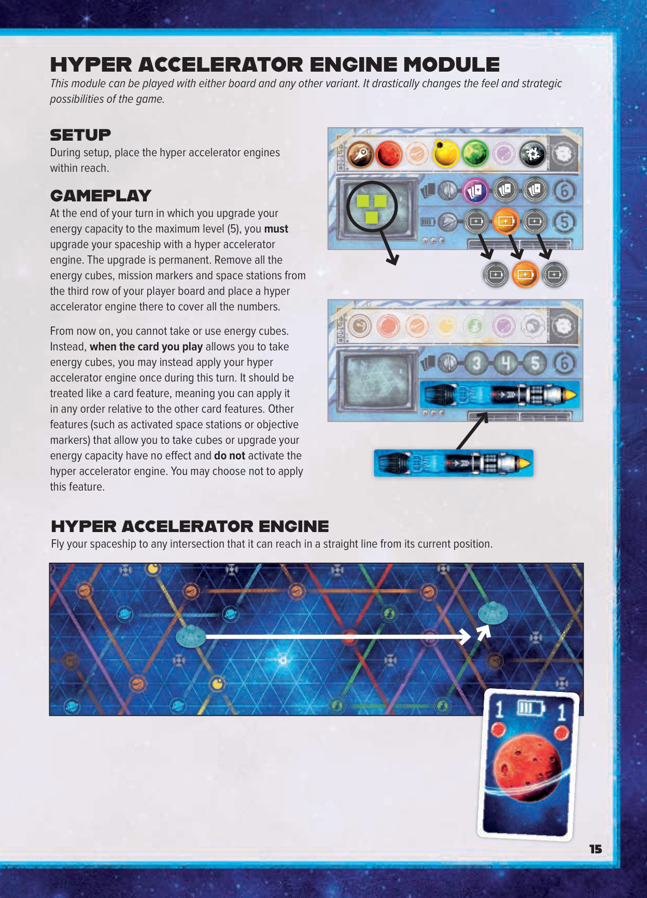
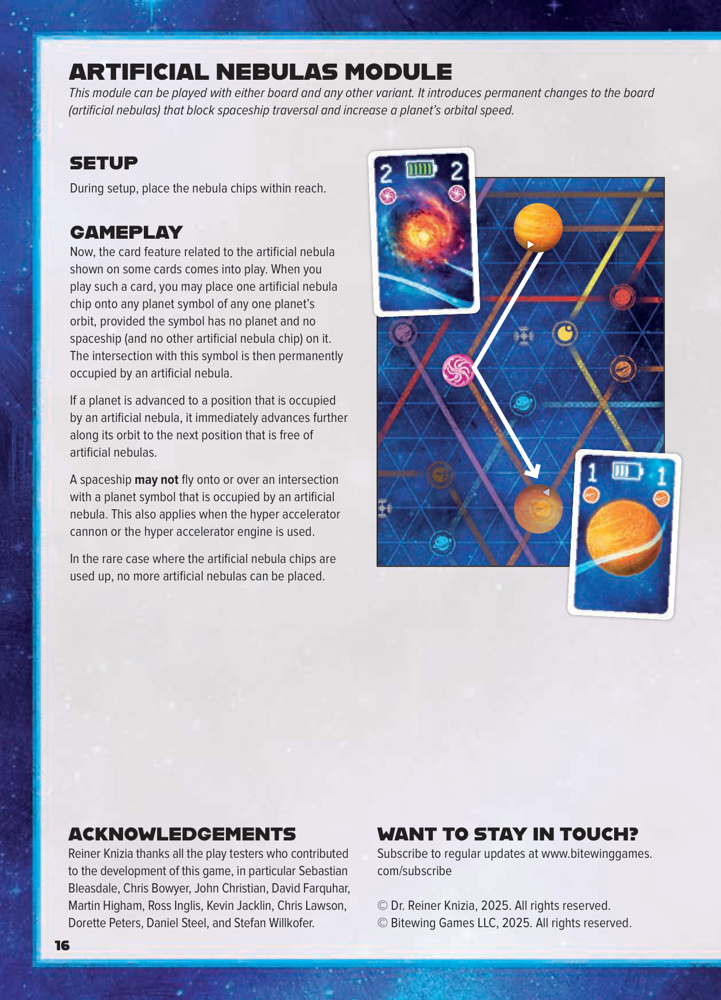
致谢
Reiner Knizia 感谢所有参与本游戏开发的测试玩家，特别是 Sebastian Bleasdale、Chris Bowyer、John Christian、David Farquhar、Martin Higham、Ross Inglis、Kevin Jacklin、Chris Lawson、Dorette Peters、Daniel Steel、Stefan Willkofer。
保持联系：订阅更新于 www.bitewinggames.com/subscribe
版权：© Dr. Reiner Knizia, 2025。保留所有权利。 · © Bitewing Games LLC, 2025。保留所有权利。